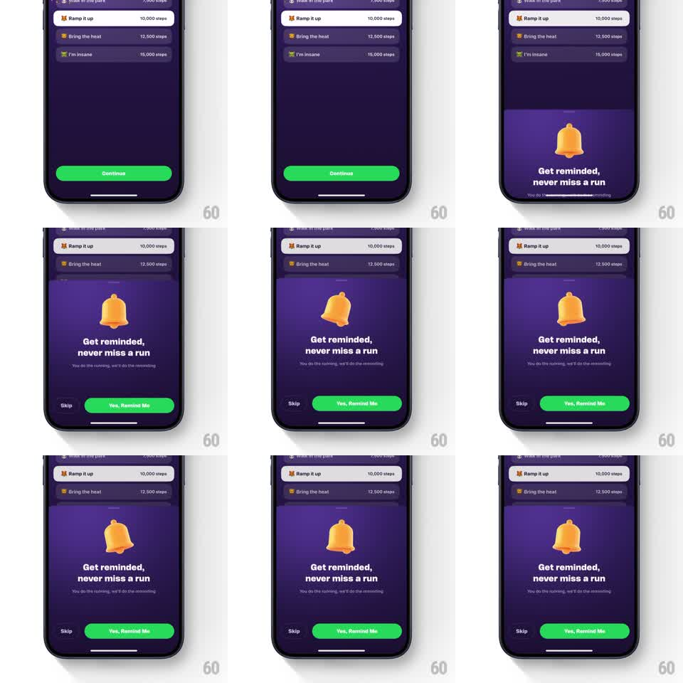

Media
Frame-by-frame

Rebuild this interaction 1:1: Supersonic's reminder sheet - over the selected goal list, a bottom sheet rises with a rocking 3D bell, "Get reminded, never miss a run", and action buttons that slide up with a springy stagger.

Rebuild this interaction 1:1: Supersonic's reminder sheet - over the selected goal list, a bottom sheet rises with a rocking 3D bell, "Get reminded, never miss a run", and action buttons that slide up with a springy stagger.
## Integration
Integration: stack-agnostic spec - springs given as stiffness/damping, timed motions as duration + curve; map every value to your framework and animation library of choice.
## Scene
Behind: the step-goal list ("Ramp it up - 10,000 steps" selected as a white card, others dark purple). The sheet: dark purple, top-rounded, with a glossy orange 3D bell, bold headline "Get reminded, never miss a run", subline "You do the running, we'll do the reminding", a "Skip" text button left, and a green "Yes, Remind Me" pill right.
## Motion spec
Pattern: sheet rise with rocking bell and staggered buttons.
- After goal selection, the sheet slides up (spring stiffness ~300, damping ~28), the goal list dimming behind a scrim.
- The bell enters last and rocks: rotate +-12deg, 1.2s, two full swings then settle - like it just rang.
- Headline fades up (250ms), subline 80ms later.
- The action buttons slide up from the sheet's bottom edge with a spring (stiffness ~350, damping ~24), "Yes, Remind Me" leading Skip by ~60ms.
- Tap either action: the button compresses (scale 0.95, 100ms) and the sheet slides down (250ms, ease-in), the goal list brightening back.
## Calibration
- The bell rocks on its own loop entry only - no perpetual ringing while the user reads.
- The green Yes button dominates the row; Skip is quiet text.
## Reduced motion
Sheet fades in; bell static; buttons appear without slide.
## Don't miss
- The selected goal card stays visible above the sheet - the sheet is a follow-up to that choice, not a new flow.
- Bell is glossy 3D with a highlight sweep, not a flat icon.